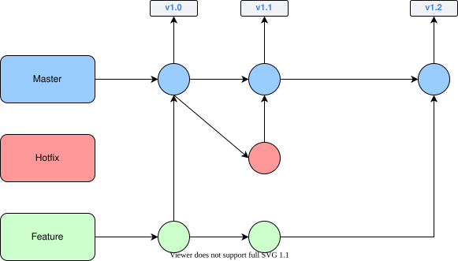
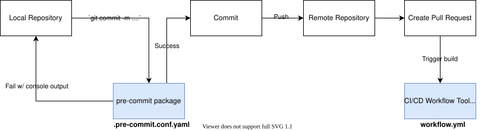
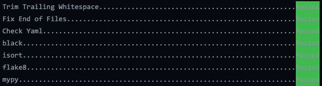

Project Standards
Development Environment
If you haven’t already, please visit “(b) Development Environment” to set up your local development environment.
Version Control (VC)
The repository uses a fork-based Git workflow with tag releases.

Guidelines for VC
mainmust always be deployableAll changes are made through support branches on forks
Rebase with
mainto avoid/resolve conflictsMake sure
pre-commitchecks pass when committing (enforced in CI/CD build)Open a pull-request (PR) early for discussion
Once the CI/CD build passes and PR is approved, the PR is ready to merge.
Merge PR into
main. For small changes, use the “Squash and merge” option. For big changes with many distinct commits, or commits contributed by different developers, use the “Create a merge commit” option.Delete the branch on GitHub and in your local workspace.
Things to Avoid in VC
Don’t merge in broken or commented out code
Don’t commit onto
maindirectlyDon’t merge with conflicts (handle conflicts by rebasing:
git rebase upstream/main)
Pre-commit
The repository uses the pre-commit package to manage pre-commit hooks.
These hooks help enforce quality assurance standards and identify simple issues
at the commit level before submitting code reviews.

pre-commit Flow
Helpful pre-commit Commands
zppy uses the following pre-commit checks:
trailing-whitespace - Trims trailing whitespace from the end of each line.
end-of-file-fixer - Ensures files end with a single newline character.
check-yaml - Validates YAML files for correct syntax.
black - Auto-formats Python code to a consistent style using the black formatter.
isort - Sorts and organizes Python import statements alphabetically and by type using isort.
flake8 - Lints Python code for style violations and common errors (PEP 8) using flake8.
mypy - Runs static type checking on Python code using type annotations using mypy.
Install into your cloned repo
conda activate zppy_dev
pre-commit install
Automatically run all pre-commit hooks (just commit)
# Tip: If there is an issue with pre-commit, you can bypass with the `--no-verify` flag. Please do NOT use this on a regular basis.
git commit -m '...'

pre-commit Output
Manually run all pre-commit hooks
pre-commit run --all-files
Run individual hook
# Available hook ids: trailing-whitespace, end-of-file-fixer, check-yaml, black, isort, flake8, mypy
pre-commit run <hook_id>
Continuous Integration / Continuous Delivery (CI/CD)
This project uses GitHub Actions to run two CI/CD workflows. The workflows are defined here.
CI/CD Build Workflow
This workflow is triggered by Git
pull_requestandpush(merging PRs) events to the the main repo’smain.Jobs:
Run
pre-commitfor formatting, linting, and type checkingRun test suite in a conda environment
Publish latest
maindocs (only onpush)When a pull request is made, the build workflow is run automatically on the pushed branch. When the pull request is merged, the build workflow is once again run, but this time on the
mainbranch.
CI/CD Release Workflow
This workflow is triggered by the Git
publishevent, which occurs when a new release is tagged.Jobs:
Publish new release docs
Publish Anaconda package
API Documentation
In most cases, code should be self-documenting.
If necessary, documentation should explain why something is done, its purpose, and its goal. The code shows how it is done, so commenting on this can be redundant.
Guidelines For Documenting
Embrace documentation as an integral part of the overall development process
Treat documentation as code and follow principles such as Don’t Repeat Yourself and Easier to Change
Use comments and docstrings to explain ambiguity, complexity, or to avoid confusion
Co-locate API documentation with related code
Use Python type annotations and type comments where helpful
Things to Avoid with Documenting
Don’t write comments as a crutch for poor code
Don’t comment every function, data structure, type declaration